File: 000960.gt.txt (if the image is defective, simply delete all Arabic text and the line will be excluded)
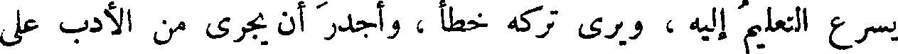
يسرع التعليم إليه ، ويرى تركه خطأ ، وأجدر أن يجرى من الأدب على
File: 000961.gt.txt (if the image is defective, simply delete all Arabic text and the line will be excluded)
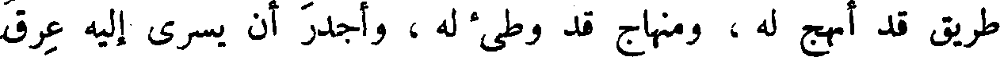
طريق قد أنهج له ، ومنهاج قد وطئ له ، وأجدر أن يسرى إليه عرق
File: 000962.gt.txt (if the image is defective, simply delete all Arabic text and the line will be excluded)
من نجله ، وسقى من غرسه ، وأجدر أن يجعل بدل الطلب للكسب(2) ،
File: 000963.gt.txt (if the image is defective, simply delete all Arabic text and the line will be excluded)
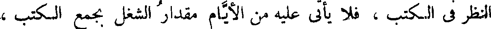
النظر فى الكتب ، فلا يأتى عليه من الأيام مقدار الشغل بجمع الكتب ،
File: 000964.gt.txt (if the image is defective, simply delete all Arabic text and the line will be excluded)
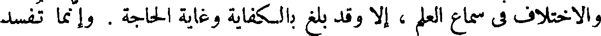
والاختلاف فى سماع العلم ، إلا وقد بلغ بالكفاية وغاية الحاجة . وإنما تفسد
File: 000965.gt.txt (if the image is defective, simply delete all Arabic text and the line will be excluded)
الكفاية من [ له ](3) تمت آلاته(4) ، وتوافت إليه أسبابه ، فأما الحدث
File: 000966.gt.txt (if the image is defective, simply delete all Arabic text and the line will be excluded)
الغرير ، والمنقوص الفقير ، فخير مواريثه الكفاية إلى أن يبلغ التمام ، ويكمل
File: 000967.gt.txt (if the image is defective, simply delete all Arabic text and the line will be excluded)
للطلب . فخير ميراث ورث كتب وعلم ، وخير المورثين من أورث ما يجمع
File: 000968.gt.txt (if the image is defective, simply delete all Arabic text and the line will be excluded)
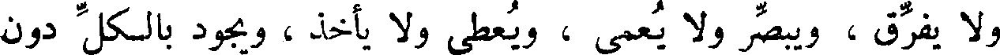
ولا يفرق ، ويبصر ولا يعمى ، ويعطى ولا يأخذ ، ويجود بالكل دون
File: 000969.gt.txt (if the image is defective, simply delete all Arabic text and the line will be excluded)
البعض ، ويدع لك الكنز الذى ليس للسلطان فيه حق ، والركاز (5) الذى
File: 000970.gt.txt (if the image is defective, simply delete all Arabic text and the line will be excluded)
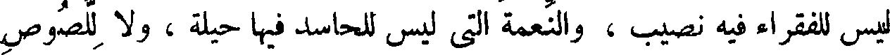
ليس للفقراء فيه نصيب ، والنعمة التى ليس للحاسد فيها حيلة ، ولا للصوص
File: 000971.gt.txt (if the image is defective, simply delete all Arabic text and the line will be excluded)
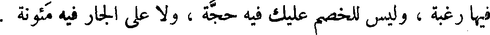
فيها رغبة ، وليس للخصم عليك فيه حجة ، ولا على الجار فيه مئونة .
File: 000972.gt.txt (if the image is defective, simply delete all Arabic text and the line will be excluded)

File: 000973.gt.txt (if the image is defective, simply delete all Arabic text and the line will be excluded)
وأما ديمقراط فإنه قال : ينبغى أن يعرف أنه لا بد من أن يكون لكل
File: 000974.gt.txt (if the image is defective, simply delete all Arabic text and the line will be excluded)
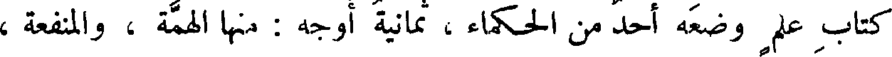
كتاب علم وضعه أحد من الحكماء ، ثمانية أوجه : منها الهمة ، والمنفعة ،
File: 000975.gt.txt (if the image is defective, simply delete all Arabic text and the line will be excluded)
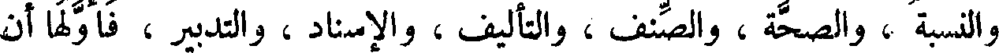
والنسبة ، والصحة ، والصنف ، والتأليف ، والإسناد ، والتدبير ، فأولها أن
File: 000976.gt.txt (if the image is defective, simply delete all Arabic text and the line will be excluded)
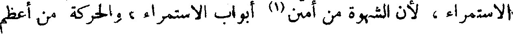
الاستمراء ، لأن الشهوة من أمتن (1) أبواب الاستمراء ، والحركة من أعظم
File: 000977.gt.txt (if the image is defective, simply delete all Arabic text and the line will be excluded)

[ أبواب ] الحرارة .
File: 000978.gt.txt (if the image is defective, simply delete all Arabic text and the line will be excluded)
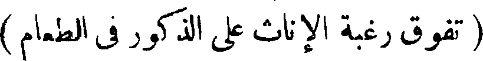
File: 000979.gt.txt (if the image is defective, simply delete all Arabic text and the line will be excluded)
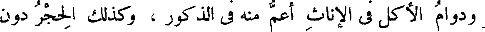
ودوام الأكل فى الإناث أعم منه في الذكور ، وكذلك الحجر دون
File: 000980.gt.txt (if the image is defective, simply delete all Arabic text and the line will be excluded)
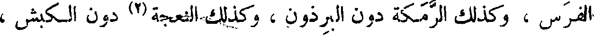
الفرس ، وكذلك الرمكة دون البرذون ، وكذلك النعجة (2) دون الكبش ،
File: 000981.gt.txt (if the image is defective, simply delete all Arabic text and the line will be excluded)
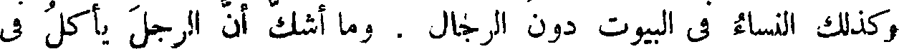
وكذلك النساء فى البيوت دون الرجال . وما أشك أن الرجل يأكل فى
File: 000982.gt.txt (if the image is defective, simply delete all Arabic text and the line will be excluded)
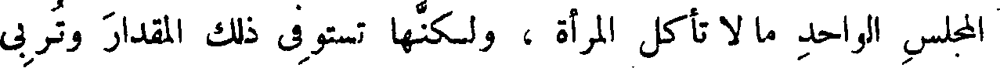
المجلس الواحد ما لا تأكل المرأة ، ولكنها تستوفى ذلك المقدار وتربى
File: 000983.gt.txt (if the image is defective, simply delete all Arabic text and the line will be excluded)
عليه مقطعا غير منظوم ، وهى بدوام ذلك منها ، يكون حاصل طعامها
File: 000984.gt.txt (if the image is defective, simply delete all Arabic text and the line will be excluded)
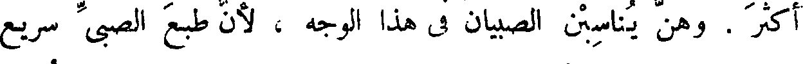
أكثر . وهن يناسبن الصبيان في هذا الوجه ، لأن طبع الصبى سريع
File: 000985.gt.txt (if the image is defective, simply delete all Arabic text and the line will be excluded)
الهضم ، سريع الكلب ، قصير مدة الأكل ، قليل مقدار الطعم ،
File: 000986.gt.txt (if the image is defective, simply delete all Arabic text and the line will be excluded)
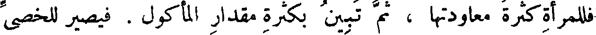
فللمرأة كثرة معاودتها ، ثم تبين بكثرة مقدار المأكول . فيصير للخصى
File: 000987.gt.txt (if the image is defective, simply delete all Arabic text and the line will be excluded)
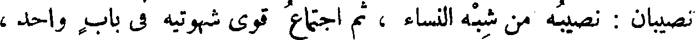
نصيبان : نصيبه من شبه النساء ، ثم اجتماع قوى شهوتيه في باب واحد ،
File: 000988.gt.txt (if the image is defective, simply delete all Arabic text and the line will be excluded)

أعنى شهوة المنكح التى تحولت ، وشهوة المطعم .
File: 000989.gt.txt (if the image is defective, simply delete all Arabic text and the line will be excluded)
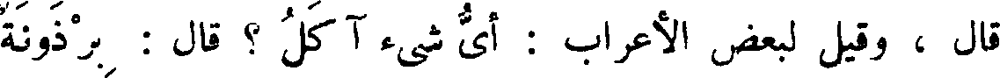
قال ، وقيل لبعض الأعراب : أى شيء آكل ؟ قال : برذونة
To Save: `Ctrl+s`, make sure to choose `Webpage, complete`!